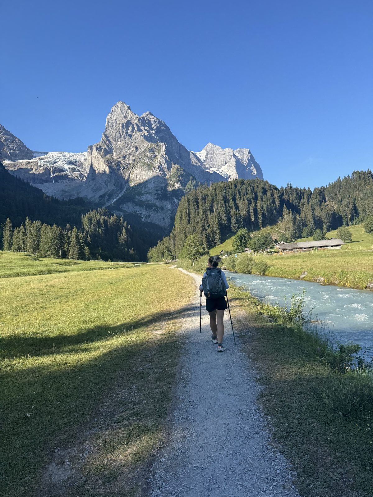
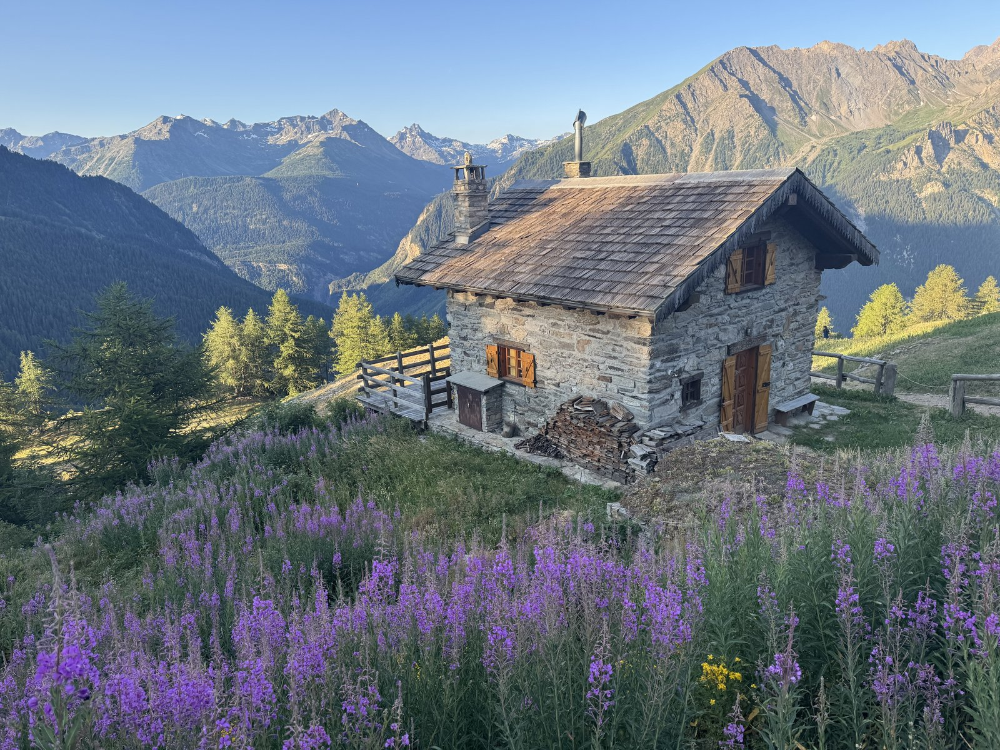

Five days linking up sections of the Swiss Via Alpina through the Bernese Oberland - Meiringen to Adelboden.

Seven days trekking around Mont Blanc through France, Italy, and Switzerland - Les Houches to Chamonix.